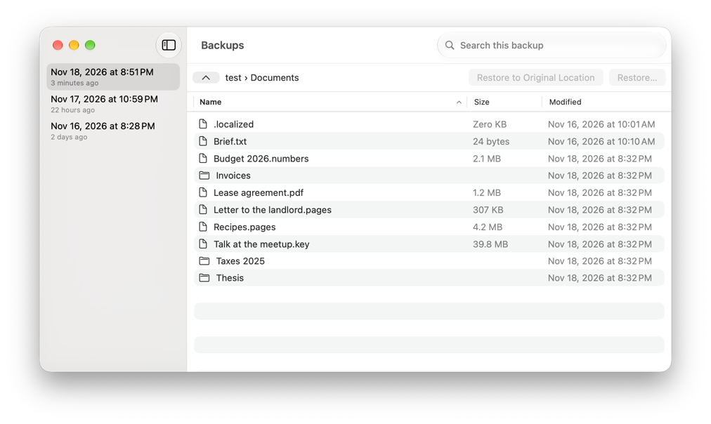
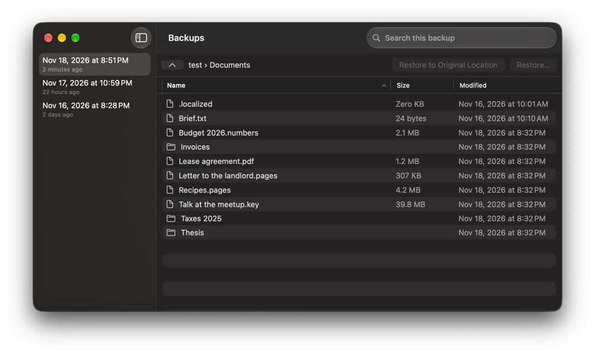
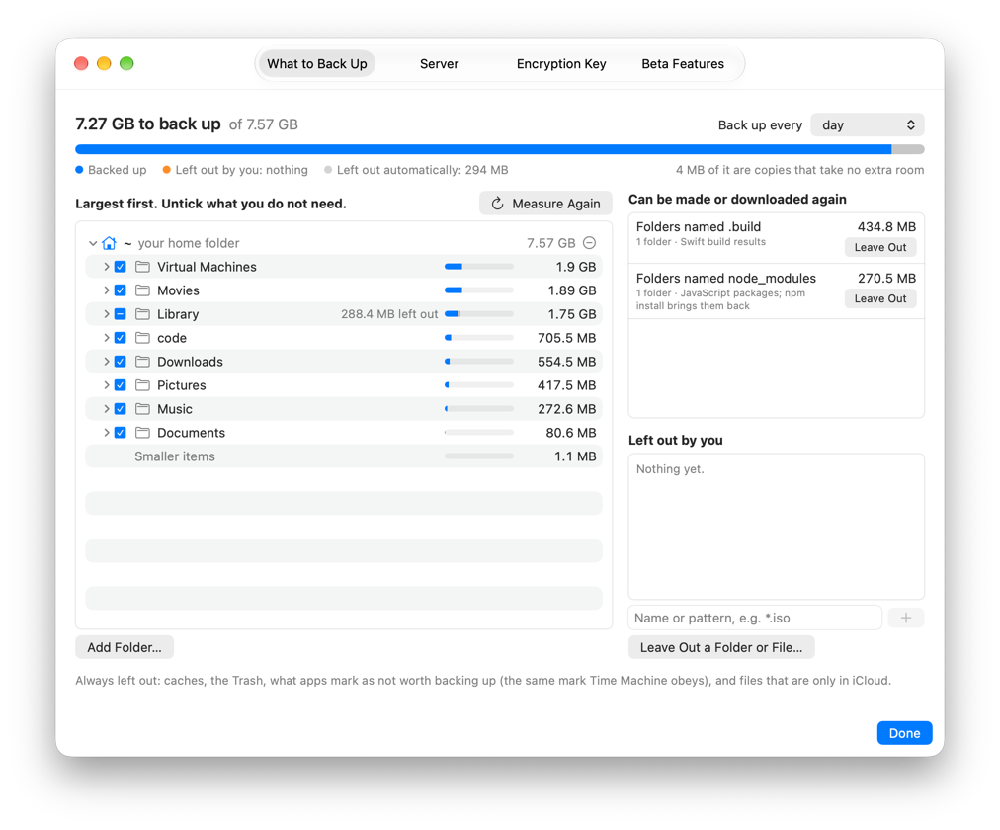
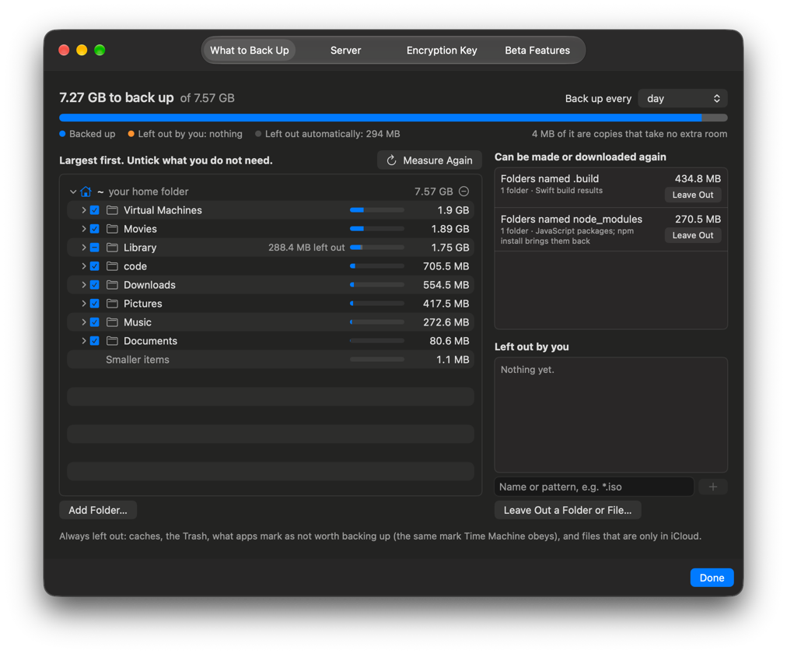

PBS Mackup · macOS menu bar app
Backs up a Mac to a Proxmox Backup Server.
I had a PBS keeping history for everything else in the house and no way to put the laptop in there. This is that.
Version 0.6.0 · Apple silicon, macOS 26 or later, PBS 4.x
brew tap 0x23me/tapbrew trust --cask 0x23me/tap/pbs-mackupbrew install --cask 0x23me/tap/pbs-mackupOr take the zip from the latest release and move the app to Applications.
Browse and search snapshots, see a file's versions, restore.


It backs up your user folder, not the system. Getting a Mac back means: install macOS, install this, restore.
Encrypted on the Mac, read from a frozen APFS snapshot. After the first run it reads only the folders macOS reports as changed.
Keeps extended attributes, tags, resource forks, creation dates and ACLs. The file contents stay readable with the stock Linux client.
Restores a few files from each new snapshot and compares them with the originals.


Shows your home folder largest first, so you can untick what you don't need.
Caches, the Trash, files that only exist in iCloud and what apps mark as not worth backing up are left out.
On the server.
A namespace for the Mac, a user of its own, and a token of that user that can only add backups there.
The commands are in the README.
- namespace
macin your datastore. - user
mac@pbs, with no password. - token
mac@pbs!backup. The app keeps it in the keychain. - role
DatastoreBackupcan't delete or prune, so thinning out old snapshots is the server's job.